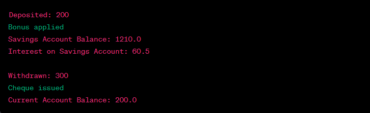

Write a Java programming to create a banking system with three classes - Bank, Account, SavingsAccount, and CurrentAccount. The bank should have a list of accounts and methods for adding them. Accounts should be an interface with methods to deposit, withdraw, calculate interest, and view balances. SavingsAccount and CurrentAccount should implement the Account interface and have their own unique methods.
Code:-
import java.util.ArrayList;
import java.util.List;
// Account interface
interface Account {
void deposit(double amount);
void withdraw(double amount);
double calculateInterest();
double viewBalance();
}
// SavingsAccount class implementing Account interface
class SavingsAccount implements Account {
private double balance;
private double interestRate;
public SavingsAccount(double initialBalance, double interestRate) {
this.balance = initialBalance;
this.interestRate = interestRate;
}
@Override
public void deposit(double amount) {
balance += amount;
System.out.println("Deposited: " + amount);
}
@Override
public void withdraw(double amount) {
if (balance >= amount) {
balance -= amount;
System.out.println("Withdrawn: " + amount);
} else {
System.out.println("Insufficient funds");
}
}
@Override
public double calculateInterest() {
return balance * interestRate;
}
@Override
public double viewBalance() {
return balance;
}
// Unique method for SavingsAccount
public void applyBonus() {
balance += 10; // For example, adding a bonus to savings accounts
System.out.println("Bonus applied");
}
}
// CurrentAccount class implementing Account interface
class CurrentAccount implements Account {
private double balance;
private double overdraftLimit;
public CurrentAccount(double initialBalance, double overdraftLimit) {
this.balance = initialBalance;
this.overdraftLimit = overdraftLimit;
}
@Override
public void deposit(double amount) {
balance += amount;
System.out.println("Deposited: " + amount);
}
@Override
public void withdraw(double amount) {
if (balance - amount >= -overdraftLimit) {
balance -= amount;
System.out.println("Withdrawn: " + amount);
} else {
System.out.println("Exceeds overdraft limit");
}
}
@Override
public double calculateInterest() {
// Current accounts may not have interest
return 0;
}
@Override
public double viewBalance() {
return balance;
}
// Unique method for CurrentAccount
public void issueCheque() {
System.out.println("Cheque issued");
}
}
// Bank class
class Bank {
private List accounts;
public Bank() {
this.accounts = new ArrayList<>();
}
public void addAccount(Account account) {
accounts.add(account);
}
}
// Main class to demonstrate the usage
public class BankingSystem {
public static void main(String[] args) {
// Create a bank
Bank myBank = new Bank();
// Create a savings account and a current account
SavingsAccount savingsAccount = new SavingsAccount(1000, 0.05);
CurrentAccount currentAccount = new CurrentAccount(500, 200);
// Add accounts to the bank
myBank.addAccount(savingsAccount);
myBank.addAccount(currentAccount);
// Perform operations on the accounts
savingsAccount.deposit(200);
savingsAccount.applyBonus();
System.out.println("Savings Account Balance: " + savingsAccount.viewBalance());
System.out.println("Interest on Savings Account: " + savingsAccount.calculateInterest());
currentAccount.withdraw(300);
currentAccount.issueCheque();
System.out.println("Current Account Balance: " + currentAccount.viewBalance());
}
}
Output:-
